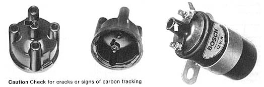

Trouble in ignition system
Possible causes/checking sequence

- Check ignition coil for cracks, tracking and loose connections
- Suppression condenser incorrectly connected (on terminal 1 instead of
terminal 15)
- Check distributor cap for:
- dampness
- dirt
- cracks, tracking
- condition of carbon brush
- Check rotor for continuity
- Check contact breaker for:
- pitting
- gap/dwell angle
(do not forget ignition timing adjustment)
- High tension cables or connectors damp, dirty or defective (poor
contact, arcing)
- Check spark plugs for:
- internal and external dampness
- dirt/dwell angle
- burning (check for correct heat range)
- electrode gap (0.6-0.7 mm/0.024-0.028 in.)
- damage
- Condenser loose or defective
- Foreign body (washer or circlip) fallen into distributor housing; blow
out with compressed air
No trouble located Trouble located and corrected